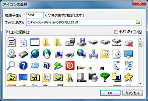

ファイルペインに表示されるファイルのアイコンを、Windowsのシステムとは別にFileVisor独自で変更します。 表示するアイコンはファイルの拡張子種別単位で定義できます。例えば
*.jpg, *.gif, *.png
はどれも同じアプリケーションで処理するが、表示上はアイコンで区別したい、という希望に対応できます。 また、この設定はFileVisor内部のみの設定となります。拡張子に対するWindowsの関連付けなどは変更されません。
アイコンの登録は、
